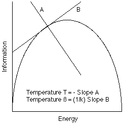

Computer systems have become so large and complex that the study of the detailed behavior of "microscopic" processes may no longer be fruitful, both because this detailed behavior may be inaccessible, and because averaging effects may make this detailed behavior irrelevant. The management of storage in a modern object-oriented system is suitable for such aggregation because the number of objects can be very large, and the microscopic details may be inaccessible--especially in the face of massive parallelism and microscopic transaction resolution.
Since statistical thermodynamics is the prediction of the aggregate or macroscopic behavior from the statistics of the microscopic behavior, we must first characterize what we mean by these terms. We assume a classical (deterministic) model of physics in which a system can have a well-defined state, and from this state and a state-transition function, we can completely predict all future states of the system. Such a complete state we will call a microstate, since it has all of the information necessary to completely predict not just the macroscopic, but also the microscopic, behavior of the system. The contents of a microstate may sometimes be factored into descriptions of individual subsystems called particles. Each independent parameter in microstate may be called a degree of freedom, or a mathematical dimension. The number of degrees of freedom, or dimensions, in the description of a typical macroscopic system is of the order of Avagadro's number--around 10^23.[2]
A macrostate is the mathematical projection of a microstate which ignores a huge amount of information--e.g., it projects Avagadro's number of dimensions onto a handful of macroscopic dimensions like temperature, pressure, etc. That a projection which throws away this much information can still be useful to predict aggregate behavior is a triumph of thermodynamics--i.e., it has homomorphic properties which allow the projected numbers from one microstate to be useful in predicting the projected numbers from a future microstate.
A macrostate--being a projection--is the image of a large number of microstates--i.e., there are many microstates consistent with a given macrostate. Such a situation is common in computer language compilers wherein the set of "live" registers must be computed for every point in a program [Aho86]. Due to the uncertainty associated with program branching, the compiler can compute only approximations to the set of live registers by computing a limit in a lattice. These lattice elements are macrostates, while the detailed actions of the instructions in a running program are the microstates.
The projections involved in storage management algorithms are clear. The designer of a storage manager does not and can not have access to the detailed behavior of application programs which call upon its services, but must characterize that behavior using a small number of parameters. The designer of the storage manager would then like to predict future aggregate behavior of the system from a small number of macroscopic parameters which characterize the application. Some useful parameters might be the mean object size, the mean object allocation rate, the mean object deallocation rate, the mean object lifetime, the distribution of object sizes or lifetimes, etc.
There may be difficulties in defining a consistent microstate or macrostate in the case of a distributed system, because such a state implies the notion of a consistent global time at which such a distributed state can be measured. We will ignore these difficulties at present.
The dependence of the state weighting process on an observer's knowledge is unavoidable. An observer of a classical (i.e., deterministic) system having complete knowledge of the initial microstate will always know exactly which microstate the system is in at every moment, and will therefore assign a non-zero weighting to only one state at a time. However, even if the initial microstate is not known, an enthusiastic and persistent observer can perform calculations which exhaustively trace every microstate consistent with the initial macrostate, and thereby produce more accurate predictions. If the observer of an aggregate model does not take complete advantage of all of the information provided in the initial macrostate, and does not track this information, then this observer will continually lose information as the system evolves. E.g., some applications perform "interval arithmetic" to compute numerical bounds on an answer, given bounds on the initial input. Unfortunately, these bounds are often very pessimistic due to the loss of information during the course of the computation--e.g., if x is in [1,3], x-x is in [1,3] - [1,3] = [1-3,3-1] = [-2,2], which is considerably worse than the precise bounds [0,0]. I.e., interval arithmetic does not preserve all of the information presented in its input.
Computer scientists are precise about the difference between reality itself and an observer's knowledge of reality. However, many physicists' descriptions of the removal of a partition separating two different gasses equate the reality of the mixing of the gases to the ignorance of the observer about the mixed state of the gases. One must believe that the physical equilibrium achieved is not caused by the observer's ignorance produced by the partition's removal. This confusion is compounded by the fact that the calculations from both points of view produce the same numerical answer! ([Jaynes88] discusses this "maximum entropy" formulation of ignorance.)
If we have two independent subsystems characterized by macrostates, then the volume of the total system is the product of the volumes of the macrostates of the independent subsystems. A multiplicative property is not as useful as an additive property, so we define a new property which is the logarithm of the phase space volume. This property is the entropy of the macrostate, and is defined by Boltzmann's equation:
Entropy = k log Volume, or more succinctly, S = k log W where k is Boltzmann's constant
As k is positive, entropy is monotonically related to the volume, which is a measure of the "uncertainty" of the microstate.
We define entropy in terms of the volume of phase space, rather than the probability of a macrostate. The definitions are equivalent, since the probability p = W/W0, where W0 is a constant, and thus S = k log W/W0 = k log W - k log W0. I.e., the definitions differ only by an additive constant. Since we are interested in entropy changes, rather than in absolute entropy, this additive constant will not be important.
Shannon defines information as the reduction of uncertainty, i.e., information is the reduction of entropy--and measures information in bits rather than in units of Boltzmann's constant. Thus, a change in entropy/information of 1 bit corresponds to a change in the volume of phase space of a factor of 2--i.e., a doubling/halving of volume. Information and entropy are the same physical phenomenon. Entropy, as a measure of the uncertainty volume in phase space, is the amount of additional information that would have to be added to a macrostate to completely define a microstate. Thus, information is the negative of entropy, so that as information goes up, entropy goes down. We will also measure entropy in bits.
Boltzmann's constant k converts units of entropy into units compatible with energy and temperature. Temperature, however, is defined more naturally in terms of energy rather than an ad hoc temperature scale, and in computer systems, "energy" will often be an abstract quantity not related to physical energy.
Thermodynamics has an implicit notion of a mixing/ergodic "motion"; however, entropy and information can have static definitions. A static configuration can thus have information and entropy, without any dynamism. Thus, the concept of information/entropy belongs more properly to thermostatistics, which eliminates the requirement for motion--e.g., in computer science, the notion of the information stored data is useful even when the data is static.
Liouville's theorem discusses reversibility and phase space volumes. Classical mechanics tells us that the evolution of a single microstate is a single thread which does not branch when going either forward or backward in time. Liouville's theorem tells us that the size of a set--i.e., volume--of such microstates in phase space does not change during system evolution. If such a volume change were to take place, then some threads would have to merge, or some threads would have to split. Since such splits and merges violate micro-reversibility, the volume must therefore remain constant.
Since distinct volumes of microstates are associated with each macrostate, Liouville's theorem tells us that the volume of an initial macrostate does not change during the micro-reversible evolution of a system. However, there is no requirement that this volume remain compact or connected during its evolution, so the description of this volume may become very complex. In fact, the shortest description of this volume might well be "the result of the time evolution of a certain micro-reversible system from a particular initial macrostate"--e.g., the micro-reversible system might be a reversible Turing machine diagonalizing all smaller Turing machines. Liouville's Theorem is thus summarized by the assertion "phase space is incompressible", since the "density" of microstates in phase space cannot change over time.
(It is not known if quantum physics is truly microreversible [Cramer86] or not [Penrose89]. However, even if it is not, it must still preserve the amount of information, if not its content, and hence information creation must be strongly coupled with information destruction and vice versa. I.e., Liouville's theorem must hold in the weaker sense that the volume of phase space remains constant. Quantum cryptography is based on the inability to extract all of the information stored in a photon [Bennett92], since any measurement "collapses the wave function". This simultaneous production of knowledge and ignorance may demonstrate the constancy of the universe's amount of information, if not constancy of the information itself.)
Carnot heat engines are described as (macro) "reversible" processes, in which heating, compression, decompression, etc., are performed sufficiently slowly that the system is "in equilibrium" at all times, and the process is therefore "reversible". However, a simple thought experiment reveals that the Carnot heat engine is not micro-reversible. Consider a matching pair of adiabatic (insulated) expansion and compression strokes. Any real expansion consists of a series of molecular impacts of varying times and impulses, and any real compression consists of another series of molecular impacts. For a micro-reversible process, not only do the initial and final microstates have to be identical, but the timings and sizes of the impulses have to exactly match. Arranging for such matches is impossible in a traditional macroscopic process.
In physical thermodynamics, macro-reversibility is equivalent to the "conservation of entropy", which in turn is equivalent to the conservation of volume in phase space. However, macro-reversibility does not require that these successive equal volumes be related by micro-reversible system evolution--only that their volumes be equal. I.e., macro-reversibility does not forbid the splitting or merging of individual micro-threads, but only that the aggregate effect of these splittings and mergings preserves the total volume. Thus, "conservation of entropy" does not imply "conservation of information", but only the conservation of the volume of phase space--i.e., "conservation of the amount of entropy". Shannon's term "information" as a pseudonym for entropy thus fails to convey the computer science meaning of "information" as "that which is necessary to restore a previous microstate".
A physical system may actually be micro-reversible, but if we ignore certain microscopic degrees of freedom, then the most convenient mathematical model becomes irreversible--e.g., the decay of a neutron into a proton, an electron and a neutrino. Although this reaction is in principle reversible, the reverse reaction requires a simultaneous 3-particle collision--a very rare event. The interaction of neutrinos with matter is so rare that the reverse reaction essentially never occurs. This reaction illustrates the ability of a neutrino to carry off valuable information, without also carrying off very much mass or energy.
The tremendous interest in "dissipative" systems, with their complex and chaotic behavior, is not an admission that micro-irreversible systems exist, but only that macro-irreversible models may be excellent mathematical models for all but the finest-grained approximations.
The energy of a system can be distributed over its subsystems in many different ways. In classical mechanics, energy is infinitely divisible, so that this distribution can be performed in an infinite number of ways. In quantum mechanics (and computer science), "energy" is quantized, so the distribution of a finite energy can be performed in only a countable number of ways.
The total energy of a system is a "knapsack" of a fixed total size, into which we can put items of various energies, if the total of these energies remains equal to the size of the knapsack. The usual thermodynamic problems involve counting the number of different ways of filling the knapsack with these items of different energies. If a large portion of the knapsack is allocated to one or two items, then there will be little space (energy) left over for smaller items, and hence the number of ways of filling the knapsack is small. Similarly, if a large portion of the knapsack is allocated to small indistinguishable items, then the number of ways of filling the knapsack are also limited. The largest number of ways of filling the knapsack utilizes many distinguishable items of many different sizes (energies).
If two items in the knapsack have the same size (energy), but are distinguishable, then we have degeneracy. (this meaning is the opposite of what one might expect). Without degeneracy, the only distinguishing feature of an item is its size (energy). In a very simple quantum system, the only possible items for our knapsack are integer multiples of the basic quantum energy.
Let us consider a simple system with a fixed energy and a fixed number of distinguishable items--i.e., we have a fixed number of distinguishable slots, each of which holds exactly one item of any size (energy), but the sum of the sizes (energies) of the items equals the total size (energy) of the knapsack. Since there are only two macroscopic numbers--the number of slots and the total energy--the macrostate is defined by these numbers. There are a large number of microstates meeting these criteria, however. The "most probable" distribution of energies is among all of those microstates which meet the macroscopic criteria is the Maxwell-Boltzmann (MB) distribution, which Maxwell found by a simple application of Lagrange multipliers and Stirling's approximation [Reichenbach56]. In the MB distribution, the probability of a slot having an energy E is proportional to exp(-ßE), where ß is the temperature of the distribution. In the MB distribution, most particles have small and similar energies, because there are a large number of ways to distribute energy among particles with similar energies. If there were no particles of large energies, then the number of possibilities would be greatly reduced. The MB distribution, which allows a few large energies, offers the best compromise.
In the MB distribution, the probability for a higher energy slot is higher at "high" temperature than at "low" temperature. Furthermore, the total amount of energy stored in the distribution will be higher with a "higher" temperature. Finally, an increased amount of energy leads to a wider distribution of energies and hence an increased entropy capacity.
1/T) = k ß = dS/dE, where k is Boltzmann's constant.
The inverse temperature is proportional to the change in entropy which results from the addition of one quantum of energy. Since the entropy is itself proportional to the logarithm of the phase space volume, we can also define the temperature in terms of changes in the phase space volume which result from the addition of one quantum of energy.
1/T = k ß = dS/dE = (d logW)/dE = 1/W * (dW/dE)
If the change in entropy (uncertainty volume) resulting from the addition of one energy quantum is small and positive, then the temperature is very high. If the entropy change resulting from the addition of an energy quantum is large and positive, then the temperature is very low. In a classical system, the energy capacity (number of energy levels) is infinite, and the entropy change with respect to an energy change is always positive.
It may happen, however, that the maximum energy that a system can hold is bounded, meaning that only a finite amount of energy may be invested in the system. Let us consider what happens when one starts with such a system in a zero energy state and adds energy in equal increments. At first, the volume of phase space grows very quickly, which implies that the entropy also grows, although not as quickly, since it is the logarithm of the volume. A large growth in entropy for each quantum of energy is typical of a low temperature. However, as additional energy is added, the entropy grows more and more slowly with each new equal increment of energy. This situation is typical of a high temperature. Since the maximum energy of the system is bounded, however, the growth of the entropy usually reaches a plateau well before the maximum energy is reached. This situation is typical of an infinite temperature. If we increase the energy beyond this point, the entropy may now start to fall! This is because the energy-carrying capacity of the system is saturating, and there are fewer and fewer degrees of freedom in which to add energy. This situation is typical of a negative temperature, which is really a "hotter than infinite" temperature. Finally, when the system reaches the maximum possible energy, the entropy often falls to zero, since there is often only one way for the system to incorporate the maximum energy.
Due to the discontinuity in the Kelvin absolute temperature T which results when the entropy reaches its maximum point, modern physicists have started using instead the inverse temperature ß=1/kT (with physical units of inverse energy). Note that "absolute zero" means ß=+infinity, normal temperature means ß>0, infinite temperature means ß=0, and abnormal ("hotter than hot") temperature means ß<0.

To summarize, the temperature of a system refers to the change in the system's information storage capacity that results from a change in the system's total energy--i.e., 1/T ~ dInfo/dEnergy.
With the development of the concept of energy, physicists knew that heat contained energy, but this was not the whole story, because heat energy at high temperatures was more valuable than the same quantity of heat energy at low temperatures, and mechanical "work" was more valuable than any kind of heat energy. Clausius developed the notion of "entropy", which flowed in and out of bodies as well as energy. Boltzmann showed that this entropy was simply the logarithm of the phase space volume; Hartley and Shannon related this entropy to information. Heat flow thus involves the flow of two independent things: energy and information.
The abstract concept of temperature refers to the ratio of the incremental change in information storage capacity which results from the change in the amount of energy stored. At a "high" temperature, more energy must be added to store the same number of bits than at a "low" temperature. Or, a "high temperature" source can dispense a unit of energy with less information than can a low temperature source. Or, since your information is my noise, a "high temperature" source of energy is less noisy than is a "low temperature" source.
Carnot's heat engine efficiency theory can be more simply explained utilizing Liouville's Theorem and the definition of temperature in terms of the volume of phase space and information. Consider two large "heat" reservoirs at temperatures TH and TL, respectively. By the definition of temperature, one can obtain a unit of energy from the high temperature reservoir only by also accepting an amount of information/noise 1/TH. Similarly, one can exhaust one unit of information/noise into the low temperature reservoir only by also exhausting TL units of energy to this reservoir. Thus, a complete cycle will accept one unit of energy and 1/TH units of information/noise from the high temperature reservoir, followed by the exhaustion of TL*(1/TH) units of energy and 1/TH units of information/noise to the low temperature reservoir. Since the same amount (1/TH) of information/noise is both accepted and exhausted, the amount of information inside of the heat engine remains constant. The excess energy 1-(TL/TH) is now available as "work"--i.e., energy without any information/noise. Thus, the efficiency in terms of the work produced relative to the high-temperature energy absorbed is (TH-TL)/TH = (deltaT)/TH. We do not require that TH>TL. If TH<TL, then the work is negative, and we have a refrigerator.
We note that the information-carrying capacity of "work" is zero, so the incremental addition of energy does not change its entropy, hence the "temperature" of "work" is infinite. This definition is consistent with the usual formulation of the Second Law which states that energy tends to flow from higher to lower temperature bodies--e.g., one can heat a cup of coffee by stirring it (a lot!). (The coffee will then remember every single collision of every single water molecule with the spoon.)
The Carnot theory of heat engine efficiency follows directly from the definition of temperature and micro-reversibility. Carnot himself utilized macro-reversibility rather than micro-reversibility; the efficiency result still follows, but such an engine may or may not correspond to physical reality. Carnot must then invoke Liouville's theorem to assure the theoretical existence of reversible heat engines.
The ability of energy and information to flow from one system to another depends upon their coupling. Without coupling, these systems cannot exchange energy or information. With strong coupling, the systems exchange energy and information quite readily and presumably reach equilibrium very quickly. With weak coupling between the systems, the systems may eventually reach equilibrium, but it may take a very long time.
An example of weakly coupled systems is a computer CPU chip and its heat sink. The few degrees of freedom that are used for the computation itself must be isolated quite well from the huge amount of random information which is constantly present in the heat sink. Unless the chip is very poorly designed, under normal circumstances the signal-carrying degrees of freedom of the wires and gates on the chip are not in thermal equilibrium with their environment. The fact that these degrees of freedom do not carry their full complement of information/randomness means that the "effective" temperature of these wires and gates is nearly infinite. This is because a lot of energy is being transferred, but relatively little information.
Another loosely coupled system is that of the quantum spin state of a number of nuclei in a magnetic field. After a reversal of the field, it may take some time for the nuclei to reestablish equilibrium, but in the mean-time, the "temperature" of these nuclei spins is hotter than infinite, i.e., negative [Marvan66].
Since a storage manager is not allowed to "look at" the bulk of the application information stored in "live" objects, we will not count these bits as part of the storage manager information stored in the heap. However, the sizes of the objects, their locations, and perhaps their pointers to other objects may be considered as information pertinent to the storage manager. Thus, the degrees of freedom under the control of the storage manager are only loosely coupled with the degrees of freedom under the control of the application, and may have a different "temperature".
For example, in a Knuth-style storage manager [Knuth73] in which there are no pointers, the only relevant information is in the sizes, locations and live/free status of the storage blocks. In the case of a non-relocating Lisp cons cell garbage collector, the relevant information might include pointer and list/atom information, but would not include location (irrelevant) and size (constant) information. In the case of a copying collector, size and pointer information would be relevant, and location information may or may not be relevant. The simplest situation is a storage manager having fixed-size blocks, no relocation, and no pointers; the information in such a system would include only the live/free status bits for all the blocks.
In a non-garbage-collected (Knuth-style) heap, the entropy of the heap is primarily the fragmentation of the heap. In a garbage-collected heap, the entropy of the heap is associated with both fragmentation and loss of liveness information. In the case of a garbage-collected heap, however, one must be very careful about whose knowledge is being modelled, since the garbage collector can always presumably distinguish (at some cost) the live from the non-live objects. As always, the entropy of the heap is monotonically related to the volume of microstates which are consistent with some macroscopic parameters--e.g., number of live objects, total size of live objects, etc.
The mutator (application code) in a garbage-collected system adds information/entropy to the heap by its allocating and mutating operations. The ratio of the change in information relative to the change in allocations (allocation rate) might then be used as a "temperature" of the mutator.
The free storage list in a classical Lisp 1.5 system has zero entropy, assuming an infinite free storage list,[4] and since it is incapable of adding incremental information, its traditional temperature is infinite--i.e., it is thermodynamic work. The free storage list for a system with different-sized blocks has a substantial amount of information regarding the sizes and locations of these blocks. Similarly, the non-decomposed objects on the free stack of a lazy reference count decrementing system also contain a substantial amount of information which must be thrown away/forgotten before the storage can be reused.
At the end of a copying GC cycle, the amount of GC-relevant entropy is at a minimum, because the operation of the GC itself has reduced the uncertainty about which items are garbage, and has canonicalized the locations of the objects. It takes only a few instructions of the mutator, however, to wipe out a good deal of this information. Right after the GC finishes, the loss of one live object requires logn bits to specify which one. Later, after the loss of n/2 live objects, it requires approximately n bits to specify which objects are live, or about 2 bits per dying object. Since this is a reduction from logn bits, the temperature is higher than before. In other words, the temperature is at its lowest point (hopefully zero) at the end of a GC cycle, but quickly rises during the operation of the application program--i.e., a garbage collector is a refrigerator.
The computational work performed by a garbage collector can be gauged by the amount of information it wrings out of the heap. The garbage collector can extract this amount of information only by asking questions of the heap and by getting informative answers. In other words, to extract exactly one bit from the heap, a binary question must be asked whose answer the garbage collector does not already know--i.e., the answer is true 50% of the time and false 50% of the time. To extract k bits from the heap, at least k binary questions must be asked. However, since most of the conditionals in a garbage collector program do not have outcomes which are equally likely, the information extracted per question is less than one bit, and hence more than k binary questions must be asked to extract k bits. Note that this characterization of computational work is independent of the particular model of computation, whether it be serial or parallel. The most efficient garbage collector will ask "efficient" questions whose answers are truly unknown (e.g., branch prediction will be ineffective), and ask questions which can produce more than one bit--e.g., some sort of dispatch operation. This model of computation is consistent with cached and pipelined processors in which time is proportional to cache misses and pipeline bubbles rather than to the mundane, predictable operations.[5]
A compacting GC can easily isolate cells allocated since the end of the previous GC from the cells which survived the previous GC. Therefore, when the GC is next called, it has two different contiguous portions of address space--the newly allocated cells and the survivors of the previous GC. The hypothesis of generational garbage collection is that these two portions ("generations") are not in thermal equilibrium with one another--i.e., one has a higher temperature than the other. Let us compute these different temperatures. The inverse temperature of a generation is its change in entropy with the addition of one new live object. The classical temperature starts at absolute zero (no live objects), grows to infinity (50% live objects) and then continues to grow from negative infinity to minus absolute zero. At the same time, the inverse temperature ß goes smoothly from +infinity to 0 to -infinity--i.e., the inverse temperature ß is monotonically related to the percentage of garbage that can be recovered. A similar temperature can be calculated for each generation. In thermodynamic terminology, a generational GC depends upon the hypothesis that the temperature of the newest generation is lower than the temperature of the previous/surviving generation.
Generational GC Hypothesis: Temperature of Newest Gen. < Temperature of Surviving Gen.
Let us interpret this hypothesis in more familiar terminology. The temperature of a generation is the (marginal) information cost to recover a storage cell. The generational hypothesis then states that the marginal cost to recover one cell from the newest generation is less than the marginal cost to recover one cell of the surviving generation. Although the true cost of garbage collecting a generation is not the marginal cost, but the average cost for all the cells collected, we assume that most cells collected will have a cost close to that of the marginal cost, so the marginal cost is a reasonable estimate of the average cost. If the temperatures are very different--i.e., the system is far from equilibrium--then the cost of recovering cells from the newest generation will be lower than the cost of recovering cells from the surviving generation. The marginal cost is a more robust indicator than the average cost, since the average cost depends upon the size of the generation and other factors.
The technique of simulated annealing [Kirkpatrick83] utilizes the temperature concept backwards. It assumes a Maxwell-Boltzmann distribution of energies and seeks the lowest energy level by a process of slowly freezing out degrees of freedom having large energies. Although there is no guarantee that simulated annealing finds the absolutely smallest energy, it attempts to minimize the amount by which the minimum is missed. As the temperature is reduced, the change in information (amount of work) required for each additional increment in energy becomes larger. There eventually comes a point where further reductions in energy are not worth the price.
Since both garbage collection and simulated annealing perform "cooling", there may yet be a place in the realm of garbage collection for ideas to cross over from the field of optimization. Perhaps locality of reference can be optimized by using simulated annealing during GC copying.
Atkins, P.W. The Second Law. W.H.Freeman, NY, 1984.
[Baker92] Baker, H.G. "NREVERSAL of Fortune--The Thermodynamics of Garbage Collection". In Bekkers, Y., and Cohen, J., Eds. Memory Management: Proceedings, International Workshop IWMM92, St. Malo, France, Springer LNCS 637, 1992.
[Baker93] Baker, H.G. "'Infant Mortality' and Generational Garbage Collection". ACM Sigplan Not. 28,4 (April 1993), 55-57.
Bennett, C.H. "Experimental Quantum Cryptography". J. Cryptology 5 (1992), 3-28.
Brush, S.G. Statistical Physics and the Atomic Theory of Matter From Boyle and Newton to Landau and Onsager. Princeton U. Press, Princeton, 1983.
Clark, D.W., and Green, C.C. "An Empirical Study of List Structure in Lisp". CACM 20,2 (Feb. 1977), 78-87.
Collins, G.E. "A method for overlapping and erasure of lists". CACM 3,12 (Dec. 1960), 655-657.
Courts, H.R. "Improving Locality of Reference in a Garbage-Collecting Memory Management System". CACM 31,9 (1988).
Cramer, J.G. "The transactional interpretation of quantum mechanics". Revs. of Mod. Phys. 58,3 (July 1986), 647-687.
d'Espagnat, B. "The Quantum Theory and Reality". Sci. Amer. 241 (1979), 158-181.
DeWitt, B., and Graham, N., eds. The Many-Worlds Interpretation of Quantum Mechanics. Princeton U. Press, NJ, 1973.
Erickson, G.J., and Smith, C.R. Maximum-Entropy and Bayesian Methods in Science and Engineering, Vol. I: Foundations. Kluwer Academic Publs., Dordecht, 1988.
Feynman, R.P., et al. The Feynman Lectures on Physics. Addison-Wesley, Reading, MA 1963.
Fisher, D.A. "Bounded Workspace Garbage Collection in an Address-Order-Preserving List Processing Environment". Inf.Proc.Lett. 3,1 (July 1974), 29-32.
Gottfried, K., and Weisskopf, V. Concepts of Particle Physics, Vol. I. Clarendon Press, Oxford, 1986.
Gutowitz, H., ed. Cellular Automata: Theory and Experiment. MIT Press, Camb., MA, 1991.
Hartley, R.V.L. "Transmission of Information". Bell Sys. Tech. J. 7 (July 1928), 535-563.
Huberman, B.A., ed. The Ecology of Computation. North-Holland, Amsterdam, 1988.
Jaynes, E.T. "The Relation of Bayesian and Maximum Entropy Methods". In [Erickson88], 25-29.
Jaynes, E.T. "The Evolution of Carnot's Principle". In [Erickson88], 267-281.
Khinchin, A.I. Mathematical Foundations of Information Theory. Dover Publs., New York, 1957.
Kirkpatrick, S, et al. "Optimization by Simulated Annealing". Science 220 (1983), 671-680.
Knuth, D.E. The Art of Computer Programming, V.1: Fundamental Algorithms, 2nd Ed. Addison-Wesley, 1973.
Knuth, D.E. The Art of Computer Programming, V.2: Seminumerical Algorithms, 2nd Ed. Addison-Wesley, 1981.
Knuth, D.E. The Art of Computer Programming, V.3: Sorting and Searching. Addison-Wesley, 1973.
Kuhn, T.S. Black-Body Theory and the Quantum Discontinuity 1894-1912. U. of Chicago Press, 1978.
Mandelbrot, B. "The Role of Sufficiency and of Estimation in Thermodynamics". Ann. Math. Stat. 33 (1962), 1021-1038.
Margolus, N.H. Physics and Computation. Ph.D., MIT Physics Dept., MIT/LCS/TR-415, March 1988.
Marvan, M. Negative Absolute Temperatures. Iliffe, London, 1966.
Olsson, O. "The Memory Usage of a LISP System: The Belady Life-Time Function". Sigplan Not. 18,12 (1983), 112-119.
Prigogine, I., and Stengers, I. Order Out of Chaos: Man's New Dialogue with Nature. Bantam Books, NY 1984.
Penrose, R. The Emperor's New Mind: Concerning Computers, Minds, and The Laws of Physics. Penguin Books, NY, 1989.
Raisbeck, G. Information Theory: An Introduction for Scientists and Engineers. MIT Press, Camb., MA 1963.
Reichenbach, H. The Direction of Time. U. Cal. Press, Berkeley, 1956.
Schorr, H., and Waite, W.M. "An efficient machine-independent procedure for garbage collection in various list structures". CACM 10,8 (Aug. 1967), 501-506.
Schrödinger, E. Statistical Thermodynamics. Dover, NY, 1952.
Shannon, C.E. "A Mathematical Theory of Communication, I.". Bell Sys. Tech. J. 27,3 (July 1948), 379-423.
Shannon, C.E. "A Mathematical Theory of Communication, II.". Bell Sys. Tech. J. 27,4 (Oct. 1948), 623-656.
Shore, J.E. "Anomalous Behavior of the Fifty-Percent Rule in Dynamic Memory Allocation". CACM 20,11 (1977).
Stauffer, D. From Newton to Mandelbrot: A Primer in Theoretical Physics. Springer-Verlag, Berlin, 1990.
Suzuki, N. "Analysis of Pointer 'Rotation'". CACM 25,5 ( 1982), 330.
Toffoli, T., & Margolus, N. Cellular Automata Machines: A new environment for modeling. MIT Press, Camb., MA 1987.
Tribus, M. Thermostatistics and Thermodynamics: An Introduction to Energy, Information and States of Matter, with Engineering Applications. van Nostrand, Princeton, 1961.
Ungar, D. "Generation Scavenging: A Non-disruptive High Performance Storage Reclamation Algorithm". Sigplan Not. 19,5 1984), 157-167.
Wannier, G.H. Statistical Physics. Dover, New York, 1966.
Wolfram, S. "Statistical mechanics of cellular automata". Rev. Mod. Phys. 55 (1983), 601-644.
Zeh, H.-D. The Physical Basis of The Direction of Time. Springer-Verlag, Berlin, 1989.
Zurek, W.H., ed. Complexity, Entropy and the Physics of Information. Addison-Wesley, Redwood City, CA 1990.
[1] Economists also attempt to explain macroscopic behavior as the statistical averaging of microscopic behavior. Some have looked at economics-like models for computer systems [Huberman88].
Simulated annealing [Kirkpatrick83] is a probabilistic optimization technique suggested by physical thermodynamics which utilizes much of the terminology used here, but for a different purpose.
[2] Computer systems need an Avagadro-like number to indicate macroscopic behavior. Bell's number (after Gordon Bell) for the current generation of computer systems would be about 2^32 = 10^9.6, since this is about the upper limit of the size of computer main memories today. The lower limit of Bell's number should be the number of gates on a single chip--currently about 2^22 = 10^6.6.
[3] The modern term energy is not nearly as poetic as the classical Latin term vis viva ("living force"). However, the neutral term energy is more accurate, since as we have seen, a mechanical system requires both energy and information to achieve "vis viva".
[4] The information in a finite free storage list can be computed from its probability distribution function for its length.
[5] It should not be surprising that this model of work is similar to lower-bound complexity arguments for sorting [Knuth73]. Garbage collection, after all, sorts garbage from non-garbage.